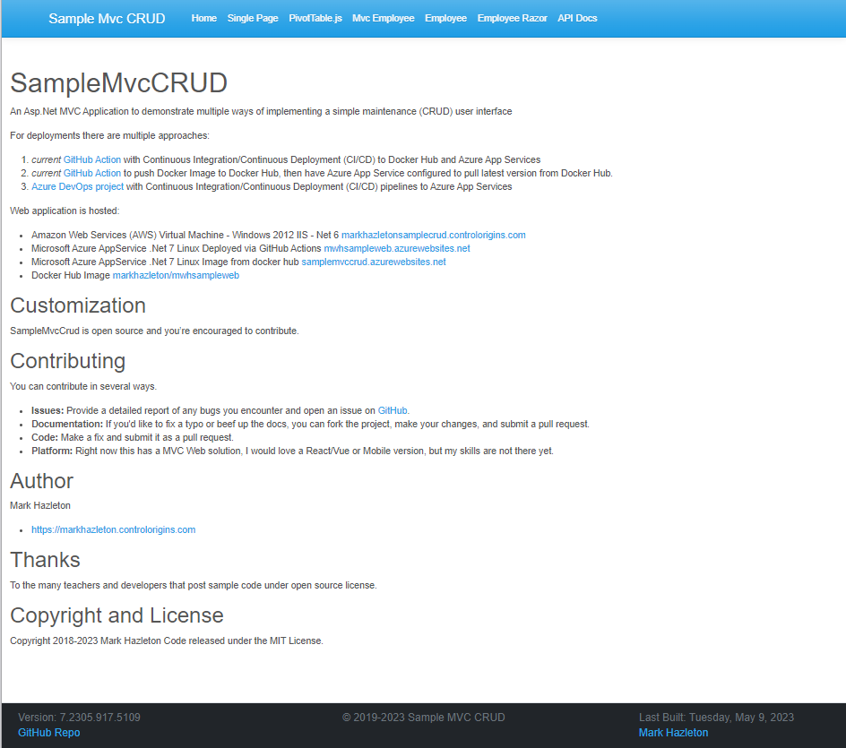
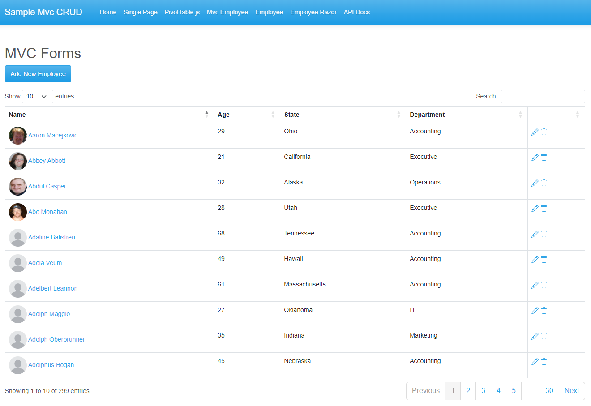
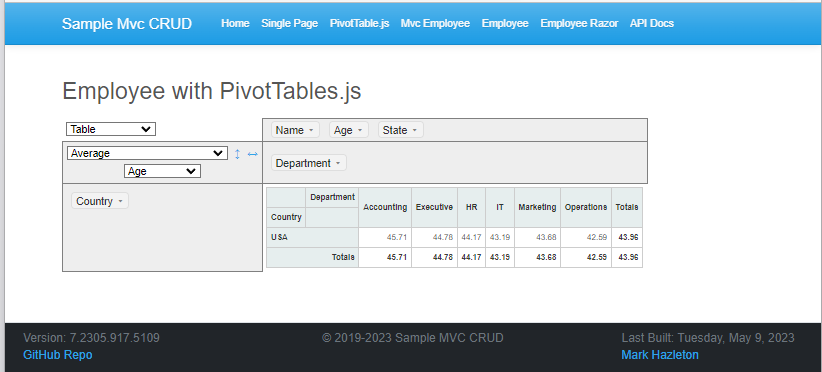
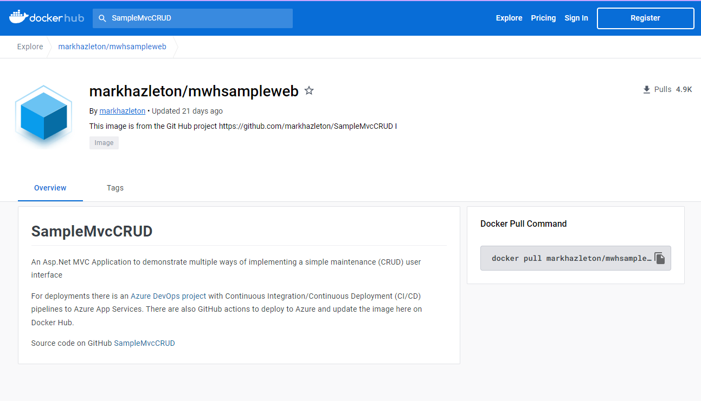

The full source code for SampleMvcCRUE is available on GitHub
Exploring ASP.Net MVC
I often find myself trying out new approaches and methods to tackle different challenges. That's where the SampleMvcCRUD project comes in. It has become something of a "Swiss army knife" for me to test out different approaches and to experiment with upgrades to the latest versions of both the .Net Core version and NuGet package versions.
As we know, CRUD operations form the backbone of many applications, and it's essential to have a solid understanding of how to implement them. The SampleMvcCRUD project provides multiple ways of implementing these operations using different approaches in Microsoft .Net.
I wanted to share my experience with a GitHub project to demonstrate ASP.Net MVC applications with CRUD – create, read, update, and delete operations. This is a tour of the project, explaining everything from the different approaches used to implement CRUD operations to the various deployment options available.
Links for more informationThe Models
The SampleMvcCRUD project also includes a model called Employee that includes Department to show lookup techniques. The model supports an image that can be set for each Employee, and the images are stored on the file system of the application. Additionally, the code generates MOCK sample data so that every time you run the application, you get a different set of data.
public interface IEmployee
{
int Age { get; set; }
string? Country { get; set; }
Department Department { get; set; }
int DepartmentId { get; set; }
int? ManagerId { get; set; }
string Name { get; set; }
string? ProfilePicture { get; set; }
string? State { get; set; }
}
public interface IDepartment
{
string Description { get; set; }
ICollection>Employee< Employees { get; set; }
string Name { get; set; }
}
Fresh Data Every Time
To get fresh random test data, I used the Bogus library. Bogus is a fake data generator for .NET languages like C#, F#, and VB.NET, and it's a great way to generate sample data for testing purposes. With Bogus, you can quickly create fake data for your application testing needs.
In SampleMvcCRUD, I used the in-memory SQLite database and Bogus to generate fresh test data on every execution of the application. This approach ensures that the application is tested with a different set of data each time it is run, making it easier to identify any potential issues that may arise. By using Bogus, I was able to create realistic-looking data, including names, ages, states, and departments, to simulate a real-world scenario.
Here is the method that uses the Bogus library to generate the sample data.
public static List<Employee> GetEmployeeList(int generateCount)
{
var states = new string[] { "Alabama", "Alaska", "Arizona", };
var fakeEmployees = new Faker<Employee>()
// Call for objects that have complex initialization
.CustomInstantiator(f => new Employee())
.RuleFor(u => u.Name, (f, u) => f.Name.FullName())
.RuleFor(u => u.Age, f => f.Random.Number(18, 70))
.RuleFor(u => u.DepartmentId, f => f.Random.Number(1, 6))
.RuleFor(u => u.Country, "USA")
.RuleFor(u => u.State, f => f.Random.ListItem(states))
.FinishWith((f, u) => { });
return fakeEmployees.Generate(generateCount);
}
Overall, the Bogus library is a great tool to have in your toolbox as a .NET developer. It can help you generate sample data for testing purposes and ensure that your application is functioning correctly.
For more information, check out: the Bogus library on GitHub
User Interface Options
User interface (UI) is the point of interaction between a user and a software application. It includes all the visual and interactive elements of the application that users see and use to interact with the system. In the context of SampleMvcCRUD, the UI is the part of the application that allows users to create, read, update, and delete data from the system.
There are three main approaches demonstrated in this project. Each approach should render the same results. These are just different techniques to achieve the same goal.
The choice of the UI implementation approach depends on the specific requirements of the application. If the application requires high interactivity and real-time updates, then the SPA approach may be the best option. If the application requires a clear separation between the presentation layer and the business logic, then the server-side MVC approach may be more appropriate. If the application needs to combine the benefits of both approaches, then the AJAX-based MVC approach may be the best option.
In SampleMvcCRUD, all three approaches are demonstrated, providing developers with a practical example of how to implement different UI options in an ASP.Net MVC application. The project also includes comprehensive documentation and source code, making it a valuable resource for developers looking to learn more about MVC architecture and CRUD operations.
- Single JavaScript Page
- The first approach is a single JavaScript page that calls the included API endpoints. This approach is perfect for developers who prefer to keep the UI and the backend separate.
- MVC Form Pages
- This approach is MVC form pages with a single page (CSHTML) for each controller endpoint. This approach is ideal for developers who want to keep things simple.
- MVC Form Pages with AJAX
- This approach is an MVC form page using JavaScript AJAX technology to make calls to the API endpoints to respond to user requests. This approach is perfect for developers who want to create a more dynamic and responsive UI.
- Razor Pages
- Another user interface implementation option available for ASP.Net MVC is Razor Pages. In this approach, the logic for handling requests and rendering views is contained in a single Razor page, rather than a separate controller and view. This can simplify the development process and make the code easier to manage. One of the benefits of using Razor Pages is that you can use the built-in model binding to automatically map form fields to model properties. This can greatly simplify the code required to handle user input This approach is ideal for developers who want to keep things simple.
Adding Profile Pictures to Employees
One of the features I wanted to add to the SampleMvcCRUD application was the ability to upload profile pictures for employees. There are various ways to achieve this, including storing the images in a database or on a cloud storage service like Amazon S3. However, after some consideration, I decided to keep things simple and store the images directly on the local file system of the application.
To implement this feature, I added a new field to the Employee model to store the file path of the profile picture. Then, I created a new view in the EmployeeController for uploading the image file and saving it to the local file system. I used the built-in System.IO namespace in .Net Core to handle file input/output operations.
While this approach may not be the most scalable or secure, it worked well for the needs of the SampleMvcCRUD application. Plus, it provided a good opportunity to practice working with file operations in .Net Core.
PivotTable.js
Adding a Pivot Table feature can enhance the user experience and provide powerful data analysis capabilities. A pivot table is a data summarization tool used in spreadsheets and databases, which allows for the quick and easy analysis of large amounts of data. It allows users to rotate rows and columns of data to create a summary table, filter and sort data, and perform calculations.

PivotTable.js is an open-source JavaScript library that provides a simple and powerful way to create pivot tables in web applications. It allows developers to easily create dynamic, drag-and-drop pivot tables that work with large datasets. The library is highly customizable and can be used with a variety of data sources, including JSON and CSV files.
Implementing a Pivot Table feature using PivotTable.js can provide valuable insights and improve the user experience. Users can quickly analyze and visualize data, and the drag-and-drop functionality makes it easy to change the layout of the table to explore different relationships between the data. Additionally, PivotTable.js provides powerful filtering and aggregation capabilities, allowing users to drill down into the data to find meaningful patterns and insights.
Adding PivotTable.js to the SampleMvcCRUD application was a great way to quickly enhance the data analysis capabilities of the application. By implementing this open-source JavaScript library, users can create dynamic, interactive pivot tables that allow for flexible exploration of the generated set of Employees.
Application Deployment Options
Deploying an application is just as important as developing it, and the SampleMvcCRUD project demonstrates several deployment options. When it comes to deploying an application, there are many cloud computing options available. For this application, I chose to demonstrate 2 of these options as they are the most common.
- Infrastructure as a Service (IaaS)
- IaaS is the more basic category of cloud computing, which allows you to rent IT infrastructure like servers, virtual machines, storage, networks, and operating systems from a cloud provider on a pay-as-you-go basis. With IaaS, you have more control over the infrastructure and can choose exactly what you need to run your application. This can be a good option if you need to run a specific operating system or want more control over the server configuration.
- Platform as a Service (PaaS)
- PaaS is a higher-level service that provides a pre-configured platform for application development and deployment. This includes everything from the operating system to the middleware, database management, and application runtime environment. With PaaS, you don't need to worry about the underlying infrastructure, as it's all managed by the cloud provider. This can be a great option if you want to focus solely on developing and deploying your application without worrying about the underlying infrastructure.
For deploying SampleMvcCRUD, there are multiple options available, including deploying to a virtual machine using IaaS or using PaaS services like Microsoft Azure AppService. The choice of deployment method ultimately depends on the requirements of the application and the developer's preferences.
- Azure Virtual Machine (PaaS)
- The project is currently hosted on Azure Virtual Machine – Net 9 samplecrud.markhazleton.com,
- Microsoft Azure AppService (IaaS)
- Dot Net 9 Linux deployed via GitHub Actions samplecrud.azurewebsites.net,
- Azure App Service from Docker Hub
- Microsoft Azure AppService .Net 7 Linux image from Docker Hub samplemvccrud.azurewebsites.net, and Docker Hub Image markhazleton/mwhsampleweb.
Development Operations (DevOps)
DevOps is a relatively new approach to software development that combines development and operations teams to work collaboratively throughout the entire software development life cycle. At its core, DevOps is a philosophy that emphasizes the importance of communication and collaboration between these teams to deliver high-quality software at a faster pace.
One of the key concepts of DevOps is Continuous Integration and Continuous Deployment (CI/CD), which involves automating the process of building, testing, and deploying software. This helps to ensure that any new code changes are thoroughly tested and deployed quickly and efficiently.
GitHub Actions enables developers to create automated workflows, triggered by events such as a pull request, that can build, test, and deploy their code automatically. These workflows can include gates that check that any new code compiles and passes automated tests before it is merged into the main branch of the repository.
The benefits of DevOps, including faster delivery of high-quality software, make it an increasingly popular approach to software development. By adopting DevOps practices, organizations can create a more agile, collaborative, and an efficient software development process that is better aligned with business requirements.
In the context of SampleMvcCRUD, I have leveraged GitHub Actions to implement CI/CD pipelines. These pipelines are triggered by updates to the repository, and they include a series of gates that check whether any new code compiles and passes automated tests. If the code passes all the gates, it is automatically deployed to the target environment.

Overall, DevOps has revolutionized the way we approach software development and deployment, and it has enabled us to deliver high-quality software at a much faster pace than ever before.
Application Containerization
Containerization is another important aspect of DevOps that involves packaging an application into a container that can be deployed consistently across different environments. Docker is a popular containerization platform that allows developers to build, test, and deploy their applications in a standardized way.
One deployment option for the SampleMvcCRUD project is to use Docker containers. A container is a lightweight, standalone executable package of software that includes everything needed to run an application, including code, runtime, system tools, libraries, and settings. Containerization allows developers to easily move applications between development, testing, and production environments while maintaining consistency and compatibility.
The process of containerization involves packaging an application and its dependencies into a single container image that can be run on any platform or infrastructure that supports containers. In the case of SampleMvcCRUD, the application is packaged into a Docker container image that can be deployed to any platform or cloud provider that supports Docker containers.
One major advantage of containerization is that it makes it easy to deploy and manage applications across multiple environments. Developers can build and test an application in a container on their local machine, then deploy the same container to a production environment without having to worry about compatibility issues or differences in the underlying infrastructure. This makes it easier to maintain consistency and reliability across multiple environments and reduces the risk of errors or downtime due to environment-specific issues.
Containerization is a powerful tool for modern application development and deployment, allowing developers to easily package and deploy applications across multiple environments with consistency and reliability. While there are some potential drawbacks to containerization, these can generally be mitigated with careful planning and management and the benefits of containerization make it well worth considering for any modern application deployment.
Lifelong learner
As a lifelong learner, I'm always seeking out new techniques and approaches to improve my development skills. That's why I wanted to share my experience with a GitHub project that demonstrates ASP.Net MVC applications with CRUD operations.
The SampleMvcCRUD project has become something of a "Swiss Army knife" for me, allowing me to test out new approaches and methods, as well as upgrades to the latest versions of both .NET Core and NuGet packages.
In this project, I have explored multiple ways to implement CRUD operations using different approaches in Microsoft .NET frameworks. I have also discussed the use of containerization, continuous integration and deployment (CI/CD), and other modern development practices.
And the learning never stops. For example, I only recently added a section on the use of the Bogus library to create sample data on every run of the application. This is just one example of how we're always experimenting with new tools and techniques to improve our development skills.
So if you're a fellow lifelong learner, I invite you to follow the SampleMvcCRUD project and see what new updates and techniques have been added. And if you have any suggestions or ideas for new sections or features, feel free to let me know – because as developers, we're always learning.